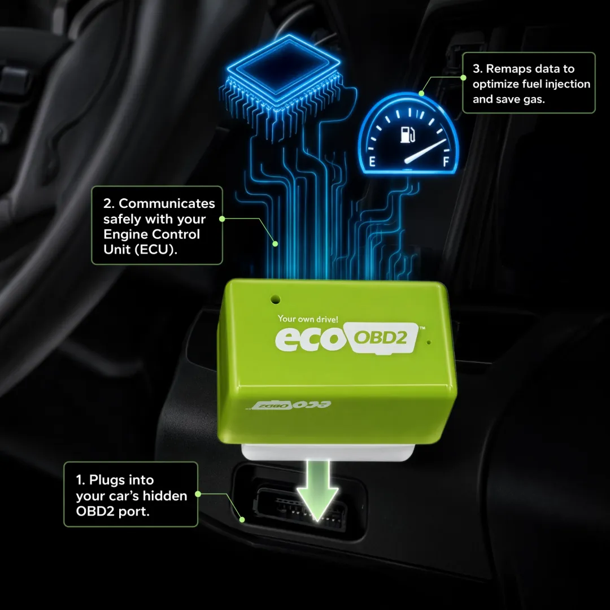
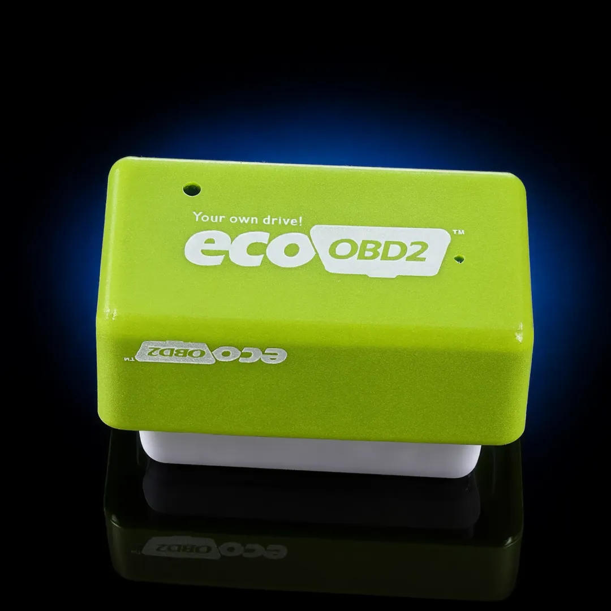

Tank Saver is a simple OBD-II fuel-saving device designed to help optimize engine performance and fuel efficiency. Plug it directly into your vehicle's OBD-II port and drive normally. With no wiring, app, or mechanic required, it provides a convenient way to support better fuel economy and a smoother driving experience.

Rising fuel costs can make every trip more expensive. Tank Saver offers a simple plug-and-play approach to supporting fuel efficiency by connecting directly to your vehicle's OBD-II port. Designed to work with the engine's existing systems, it provides a convenient way to support economy and performance without complicated installation.
The device is designed to optimize engine parameters through the OBD-II connection, supporting more efficient fuel use and helping reduce the amount of fuel consumed during everyday driving.
By communicating with the vehicle's onboard systems, it is designed to support engine response and driving performance while helping you make the most of the fuel already in your tank.
No wiring, special tools, app, or mechanic is required. Locate your vehicle's OBD-II port, connect the device, and drive normally. It is designed to calibrate as you drive, making fuel efficiency support simple to add to your routine.
See the key figures reported from Tank Saver testing and driver experiences. Individual results may vary by vehicle, engine, driving habits, and road conditions.
Average reduction reported in product testing.
Average increase reported by drivers and testing.
Approximate driving distance for full adaptation.
Plug-and-play OBD-II installation with no wiring.
Connect the device to your vehicle's OBD-II port and let it work as you drive. No wiring, special tools, app, or complicated setup is required.
Locate your vehicle's OBD-II port, typically found beneath the dashboard near the steering column.
Connect the unit directly to the OBD-II port. The plug-and-play design means there is no wiring or special equipment to install.
Start driving as usual. The device communicates through the vehicle's onboard system while you continue your normal routine.
As you drive, the system is designed to adapt to your vehicle. Results may become easier to assess as you build up driving distance.
Get a simple plug-and-play solution designed to support fuel efficiency and engine performance without complicated installation or extra equipment.
| Feature | Tank Saver | Others |
|---|---|---|
| Supports fuel consumption reduction up to 15% | ||
| Multi-brand compatibility for gas and diesel vehicles | ||
| Designed to support engine performance | ||
| Plug-and-play OBD-II installation with no wiring | ||
| No app, wireless setup, or software updates required | ||
| Designed to adapt as you drive | ||
| Road-test program results |
Connect it to the OBD-II port, drive normally, and monitor your vehicle's fuel economy over time.
From easier installation to changes in fuel economy and engine response, see what drivers have shared after adding this plug-and-play device to their vehicles. Individual experiences and results may vary.
"Installed it in my 2012 Toyota Aygo and you can feel the difference in the driving experience. I'd estimate around a 10% increase in horsepower."
"Great experience with my 2007 Seat Córdoba. The car feels much more responsive and it has made driving my older vehicle more enjoyable."
"I'm giving it some time before judging the results. The device is designed to adapt over about 200km of driving, and I haven't reached that point yet. I'll keep watching my fuel economy."
Join thousands of drivers looking for a simpler way to support fuel efficiency and engine performance. Backed by a 30-day money-back guarantee for added peace of mind.

Get straightforward answers about Tank Saver, including how it connects to your vehicle, installation, calibration, compatibility, and what to expect when using it.